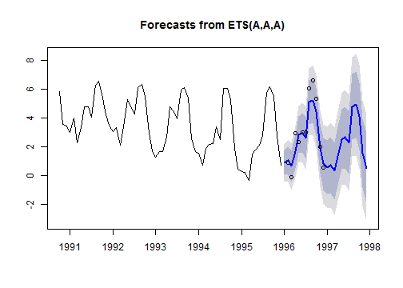
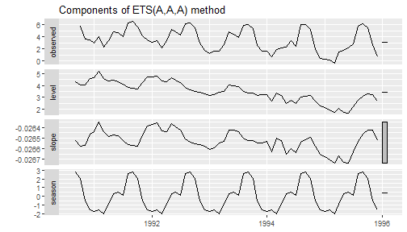

layout: true
class: center, middle, inverse # Forecasting Time Series ## Seasonal Exponential Smoothing Models
.futnote[Eli Holmes, NOAA Fisheries]
.citation[eli.holmes@noaa.gov]
To make your introduction to time-series modeling in R a little gentler, I started with non-seasonal models.
To work with seasonal data, we need to turn our data into a ts object, which is a “time-series” object in R. This will allow us to specify the seasonality. It is important that we do not leave out any data in our time series. You data should look like so
Year Month metric.tons
2018 1 1
2018 2 2
2018 3 3
...
2019 1 4
2019 2 6
2019 3 NAThe months are in order and the years are in order.
load("chinook.RData")
head(chinook)| Year | Month | Species | log.metric.tons | metric.tons |
| 1990 | Jan | Chinook | 3.4 | 29.9 |
| 1990 | Feb | Chinook | 3.81 | 45.1 |
| 1990 | Mar | Chinook | 3.51 | 33.5 |
| 1990 | Apr | Chinook | 4.25 | 70 |
| 1990 | May | Chinook | 5.2 | 181 |
| 1990 | Jun | Chinook | 4.37 | 79.2 |
The data are monthly and start in January 1990. To make this into a ts object do
chinookts <- ts(chinook$log.metric.tons, start=c(1990,1), frequency=12)start is the year and month and frequency is the number of months in the year. If we had quarterly data that started in 2nd quarter of 1990, our call would be
ts(chinook, start=c(1990,2), frequency=4)If we had daily data starting on hour 5 of day 10 and each row was an hour, our call would be
ts(chinook, start=c(10,5), frequency=24)Use ?ts to see more examples of how to set up ts objects.
Now that we have specified our seasonal data as a ts object, it is easy to plot because R knows what the season is.
plot(chinookts)Now we add a few more lines to our ETS table of models:
| model | “ZZZ” | alternate function |
|---|---|---|
| exponential smoothing no trend | “ANN” | ses() |
| exponential smoothing with trend | “AAN” | holt() |
| exponential smoothing with season no trend | “ANA” | NA |
| exponential smoothing with season and trend | “AAA” | NA |
| estimate best trend and season model | “ZZZ” | NA |
Unfortunately ets() will not handle missing values and will find the longest continuous piece of our data and use that.
library(forecast)
traindat <- window(chinookts, c(1990,1), c(1999,12))
fit <- ets(traindat, model="AAA")## Warning in ets(traindat, model = "AAA"): Missing values encountered. Using
## longest contiguous portion of time seriesfr <- forecast(fit, h=24)
plot(fr)
points(window(chinookts, c(1996,1), c(1996,12)))
If we plot the decomposition, we see the the seasonal component is not changing over time, unlike the actual data. The bar on the right, alerts us that the scale on the 3rd panel is much smaller.
autoplot(fit)
Pass in a high gamma (the season weighting) to force the seasonality to evolve.
fit <- ets(traindat, model="AAA", gamma=0.4)## Warning in ets(traindat, model = "AAA", gamma = 0.4): Missing values
## encountered. Using longest contiguous portion of time seriesautoplot(fit)auto.arima() will recognize that our data has season and fit a seasonal ARIMA model to our data. Let’s use the data that ets() used. This is shorter than our training data. The data used by ets() is returned in fit$x.
no_miss_dat <- fit$x
fit <- auto.arima(no_miss_dat)
fr <- forecast(fit, h=12)
plot(fr)
points(window(chinookts, c(1996,1), c(1996,12)))fit <- auto.arima(traindat)
fr <- forecast(fit, h=12)
plot(fr)We can compute the forecast performance metrics as usual.
fit <- ets(traindat, model="AAA", gamma=0.4)## Warning in ets(traindat, model = "AAA", gamma = 0.4): Missing values
## encountered. Using longest contiguous portion of time seriesfr <- forecast(fit, h=12)Look at the forecast so you know what years and months to include in your test data. Pull those 12 months out of your data using the window() function.
testdat <- window(traindat, c(1996,1), c(1996,12))Use accuracy() to get the forecast error metrics.
accuracy(fr, testdat)## ME RMSE MAE MPE MAPE
## Training set 0.01190635 0.6193794 0.4787154 -5.578132 30.03221
## Test set -0.08549288 0.5549696 0.4466604 106.497418 120.76501
## MASE ACF1 Theil's U
## Training set 0.7939463 0.003452392 NA
## Test set 0.7407832 -0.015140843 0.2057023We can do the same for the ARIMA model.
no_miss_dat <- fit$x
fit <- auto.arima(no_miss_dat)
fr <- forecast(fit, h=12)
accuracy(fr, testdat)## ME RMSE MAE MPE MAPE MASE
## Training set 0.009978349 0.5677654 0.3965957 0.4645938 27.40972 0.6577514
## Test set 0.819203922 0.9458144 0.8192039 22.0202435 55.91631 1.3586442
## ACF1 Theil's U
## Training set -0.06137474 NA
## Test set -0.02804232 0.6046341